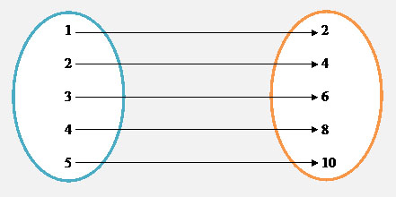
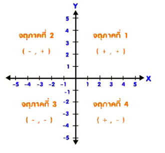
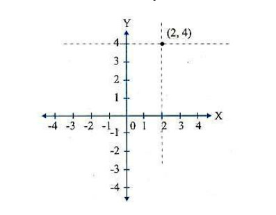
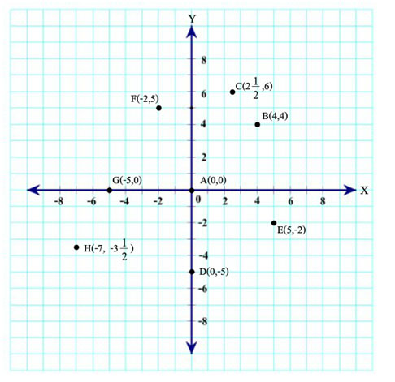

โดยทั่วไปมีเหตุการณ์ต่างเกิดขึ้นมากมาย ซึ่งเหตุการณ์ต่างๆจะแสดงถึงความสัมพันธ์ระหว่างปริมาณต่างๆสองปริมาณอยู่เสมอ เช่น การเสียค่าไฟฟ้ากับระยะเวลาการใช้ไฟฟ้า ระยะทางในการเดินทางกับระยะเวลาในการเดินทาง ระยะเวลาการโทรศัพท์กับค่าโทรศัพท์ที่จ่ายไป เป็นต้น ดังตัวอย่างต่อไปนี้ สมศรีใช้โทรศัพท์มือถือโทรหาเพื่อน โดยที่มีอัตราค่าโทรศัพท์นาทีละ 2 บาท ซึ่งเรา
สามารถแสดงความสัมพันธ์ระหว่างระยะเวลาการโทรกับค่าโทรศัพท์ได้หลายแบบได้หลายรูปแบบ เช่น
แสดงความสัมพันธ์ในรูปตาราง
|
ระยะเวลาการโทร ( นาที ) |
ราคาค่าโทรศัพท์ ( บาท ) |
|
1 |
2 |
|
2 |
4 |
|
3 |
6 |
|
4 |
8 |
|
5 |
10 |
แสดงความสัมพันธ์ในรูปแผนภาพ
ระยะเวลาการโทร ( นาที ) ราคาค่าโทรศัพท์ ( บาท )
แสดงความสัมพันธ์ในรูปคู่อันดับ
คู่อันดับ คือ การแสดงการจับคู่ระหว่างสมาชิกของกลุ่มสองกลุ่มซึ่งจะต้องมีข้อตกลงว่าสมาชิกตัวที่หนึ่งและสมาชิกตัวที่สองของคู่อันดับมาจากกลุ่มใด จากตัวอย่างนี้ กำหนดให้สมาชิกตัวแรกแสดงระยะเวลาการโทร(นาที) และสมาชิกตัวที่สองแสดงราคาค่าโทรศัพท์(บาท) ได้ดังนี้
(1,2), (2,4), (3,6), (4,8), (5,10)
หมายเหตุ ถ้าเราสลับตำแหน่งของ (1, 2) เป็น (2, 1) ความหมายก็จะเปลี่ยนไปด้วย นั่นคือ
(1, 2) หมายถึง เมื่อใช้โทรศัพท์นาน 1 นาที จะเสียค่าโทรศัพท์ 2 บาท
(2, 1) หมายถึง เมื่อใช้โทรศัพท์นาน 2 นาที จะเสียค่าโทรศัพท์ 1 บาท
แสดงความสัมพันธ์ในรูปการเขียนกราฟ
กราฟ คือ การแสดงความสัมพันธ์ในระบบพิกัดฉาก โดยการเขียนเส้นจำนวนในแนวนอนและแนวตั้งให้ตัดกันเป็นมุมฉาก
จุดกำเนิด คือ จุดที่เส้นจำนวนทั้งสองตัดกัน
แกนนอน คือ เส้นจำนวนในแนวนอน เรียกอีอย่างหนึ่งว่า แกน X
แกนตั้ง คือ เส้นจำนวนในแนวตั้ง เรียกอีอย่างหนึ่งว่า แกน Y
แกน X และ แกน Y จะอยู่บนระนาบเดียวกัน และจะแบ่งระนาบนี้ออกเป็นสี่ส่วน แต่ละส่วนเรียกว่าจตุภาค
จากรูปด้านล่างแกน x ตัดกับแกน y ทำให้แบ่งระนาบออกเป็น 4 ส่วน แต่ละส่วนเรียกว่า จตุภาค จตุภาคที่1 x มีค่าเป็นจำนวนที่มีค่าเป็นบวก y มีค่าเป็นจำนวนที่มีค่าเป็นบวก จตุภาคที่2 x มีค่าเป็นจำนวนที่มีค่าเป็นลบ y มีค่าเป็นจำนวนที่มีค่าเป็นบวก จตุภาคที่3 x มีค่าเป็นจำนวนที่มีค่าเป็นลบ y มีค่าเป็นจำนวนที่มีค่าเป็น จตุภาคที่4 x มีค่าเป็นจำนวนที่มีค่าเป็นบวก y ค่าเป็นจำนวนที่มีค่าเป็นลบ
กราฟและการนำไปใช้ เมื่อเรามีความสัมพันธ์ระหว่างปริมาณของสองกลุ่ม เราสามารถที่จะแสดงความสัมพันธ์ออกมาในรูปของกราฟได้ และเมื่อเรามีกราฟแสดงความสัมพันธ์ต่างระหว่างปริมาณสองกลุ่มนั้น เราก็สามารถที่จะหาพิกัดของจุดที่อยู่บนกราฟนั้น ๆ ได้ การเขียนกราฟของคู่อันดับ สามารถทำได้ดังนี้ 1. เขียนคู่อันดับใด ๆ ในรูป (x, y) เมื่อ x แทนจำนวนที่อยู่บนแกน X และ y แทนจำนวนที่อยู่บนแกน Y 2. เมื่อ P เป็นจุดจุดหนึ่งบนระนาบที่เป็นกราฟของ (x, y) จะกล่าวได้ว่า P มีพิกัดเป็น (x, y) หรือ P(x, y) จากนั้นเขียน จุดพิกัดทั้งหมดลงในระนาบ ตัวอย่าง กราฟของ (2,4) เป็นจุดที่ได้จากการลากเส้นตรงที่ตั้งฉากกับแกน X ที่ตำแหน่งของ 2 ไปตัดกับเส้นตรงที่ลากไปตัดกับเส้นตรงของแกน Y ที่ตำแหน่ง 4 ดังภาพ
ตัวอย่าง จงเขียนจุดต่อไปนี้บนระนาบ A(0,0) B(4,4) C(2.5,6) D(0,-5) E(5,-2) F(-2,5) G(-5,0) H(-7,-3.5)
